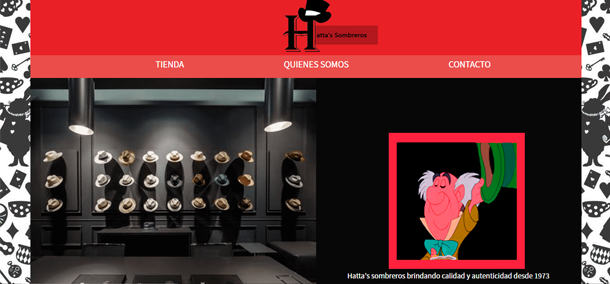
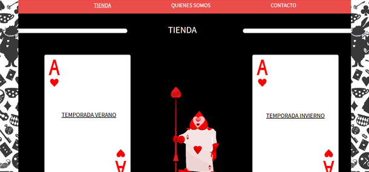
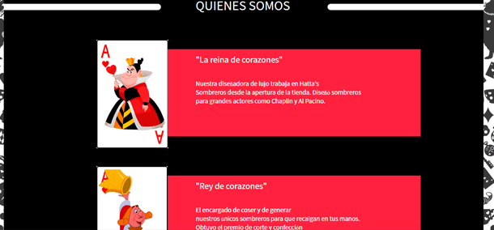

WEB


El index de la página proporciona una galería slide dónde el usuario puede observar el local y trabajos de la marca. Contiene un "nav" para que pueda navegar por la página sin dificultad alguna.
La "Tienda" de la página cuenta con dos secciones dónde el usuario puede seguir entrando más a la web. Tiene la opción de ir a la tienda donde se muestran los productos de invierno, y otra los productos de verano.

La anteúltima sección cuenta con ofrecerle al usuario un registro de las personas que participan en la marca Hatta's. Intervienen tres personajes
y se optó por integrar a la Reina y Rey de corazones, pertenecientes
a la trama de Alicia en el País de las Maravillas.